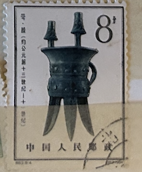
| SOURCE | TITLE| IMAGE MATCH | click to source page |
| Find Your Stamps Value | Sacrificial bronze vessels of Yin dynasty, prior to 1050 B.C.: Chia wine cup - 殷代铜器(约公元前十三世纪- 十一世纪): 斝8f Multicolored stamp price, value | 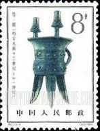 |
| brstamp.com | 特63 殷代铜器1964.8.25. – 左氏珍藏 | 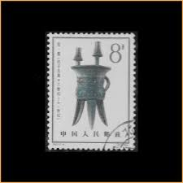 |
| Smithsonian Institution | Collections :: Zoomorphic Creatures in Ancient Chinese Art | Smithsonian Learning Lab | 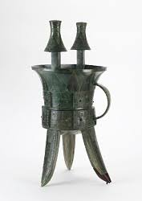 |
| moldurasclasicasjca.com | 中国切手セット 特16 特46 特63 | 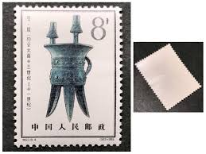 |
| eBay | CHINA 1964 Wine Cups FU (Broken Set) CV $7.00 | eBay | 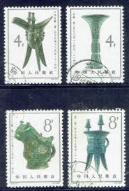 |
| eBay | Mint Never Hinged/MNH 1961-1970 Year of Issue Chinese Stamps for sale | eBay | 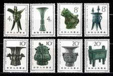 |
| eBay | 1964 China Stamps S63 - Bronze vessels of the Yin Dynasty | eBay | 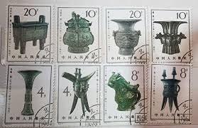 |
| eBay | Bronze Asian Stamps for sale | eBay | 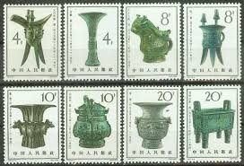 |
| Invaluable.com | Sold at Auction: A TRIPOD BRONZE RITUAL VESSEL 'JIA' | 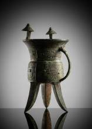 |
| Deydier Hong Kong | The jia / The Honolulu jia | 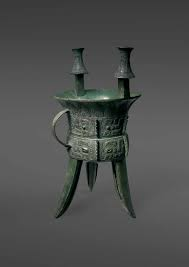 |
| eBay | China 1964 - S63 (811-818) Bronze Vases - Set MNH | eBay | 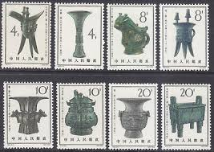 |
| eBay | P.R.China 1964 Scott 783-786, 788 Bronze Vessels CTO SCV $20. | eBay | 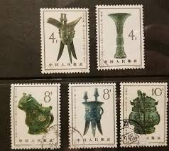 |
| PicClick | CA)CHINA 1964 BRONZE Artifacts Stamp Set Used 4分 8分 10分 20分 Green Gray Art $8.00 - PicClick | 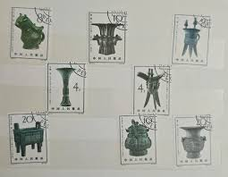 |
| eBay | PRC CHINA 1964 S63 Bronze Art Treasures Sc#783-90 | eBay | 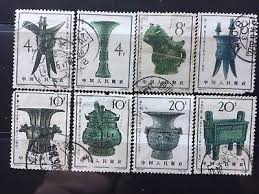 |
| PicClick | 1964 PRC CHINA S67 stamps CV$105 CTO COMB.SHIPPING $2.52 - PicClick | 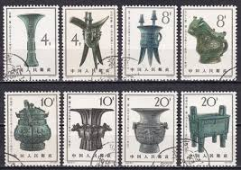 |
| Weebly | Excavating a Shang Tomb - Mrs. Couris's 6th Grade | 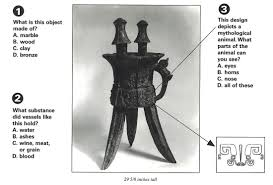 |
| Free stamp catalogue | Stamps from the year 1964 - Freestampcatalogue.com - The free online stampcatalogue with over 500.000 stamps listed. | 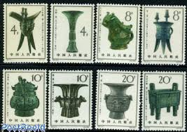 |
| AbeBooks | The Freer Chinese Bronzes, Volume 1, Catalogue (Freer Galler of Art Oriental Studies No.7) by John Alexander Pope, Rutherford John Gettens: Very Good Hardcover (1967) | rareviewbooks | 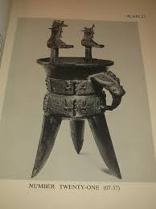 |
| Wikipedia | Erligang culture - Wikipedia | 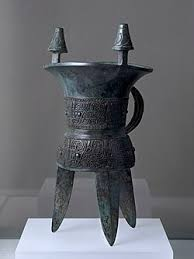 |
| Obelisk Art History | Forked blade, 璋 (Zhang), Ancient China | Obelisk Art History | 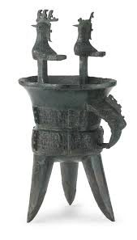 |
| Beer Studies | The Chinese Neolithic beers and the coexistence of 2 brewing methods. - Beer Studies | 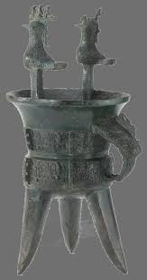 |
| Wikipedia | Jia (vessel) - Wikipedia | 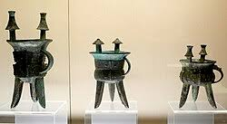 |
| Shaanxi Hanzhong Wuhou Temple history and relics | 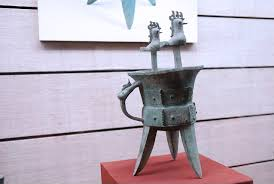 | |
| Amazon UK | 全国博物馆通识系列·一本博物馆：湖南博物院（让文物说话将博物馆带回家·附赠*彩集章册） : 湖南博物院编著: Amazon.co.uk: Books | 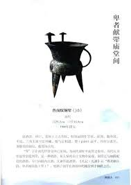 |
| Travel China Guide | China Shang Dynasty (16th -11th century BC): Polotics, Economy, Culture and Arts | 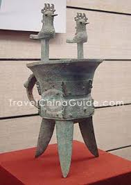 |
| Shaanxi history museum cultural relics collection | 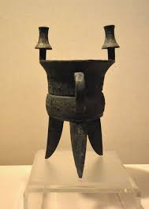 | |
| 奈良国立博物館 | Wine kettle, Jia｜Nara National Museum | 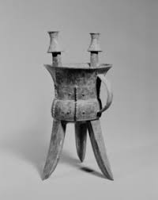 |
| Shop | PRCStamps - 494-496 - Shop | 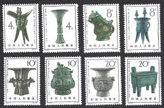 |
| The Metropolitan Museum of Art | Spirit and Ritual: The Morse Collection of Ancient Chinese Art - The Metropolitan Museum of Art | 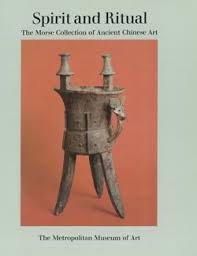 |
| Find Your Stamps Value | Sacrificial bronze vessels of Yin dynasty, prior to 1050 B.C.: Tsun wine vessel - 殷代铜器(约公元前十三世纪- 十一世纪): 尊20f Multicolored stamp price, value | 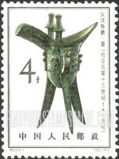 |
| springer.com | Metallurgy and Metalworking | Springer Nature Link | 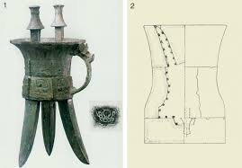 |
| Bonhams | A rare archaic bronze ritual wine vessel, jia Mid Shang dynasty, Erligang culture - Bonhams | 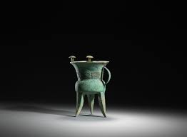 |
| Sotheby's | Fine Chinese Ceramics & Works of Art - N09116 | 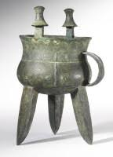 |
| Sotheby's | A bronze 'beast mask' ritual wine vessel, jia | 青銅獸面紋斝 | Ritual and Reality II | 天人之際 II | Chinese Works of Art | Sotheby's | 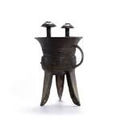 |
| Scribd | 中国文化史纲（冯天瑜） | PDF | 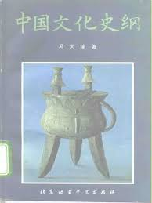 |
| LiveAuctioneers | Asian Art Session II 2025-01-17 Auction - 225 Price Results - Eldred's in MA | 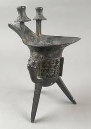 |
| springer.com | History of Metallurgy | Springer Nature Link | 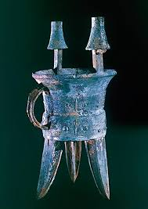 |
| Invaluable.com | Sold at Auction: An Archaic Bronze Ritual Wine Vessel, Jue, Shang Dynasty, 1600-1046 BC | 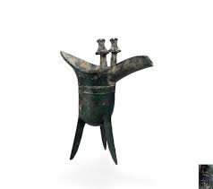 |
| Travel China Guide | Chinese Bronze Vessels: Pot, Musical Instrument, Mirror | 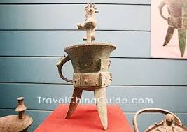 |
| Sotheby's | An archaic bronze ritual wine vessel (Jia), Middle Shang dynasty | 商中期 青銅饕餮紋斝 | Important Chinese Art | 2021 | Sotheby's | 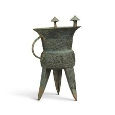 |
| Deydier | | Untitled | 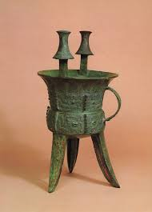 |
| Newfields | rital stake and chopper (phurba and drigug) with Hayagriva | 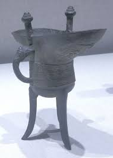 |
| University of California San Diego | Early Chinese Bronzes | 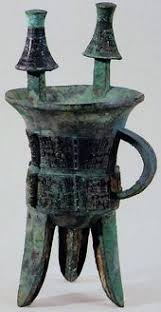 |
| Bonhams | Bonhams : AN ARCHAIC BRONZE RITUAL TRIPOD WINE VESSEL, JIA Shang dynasty | 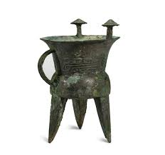 |
| museumoftheancients.com | Museum of the Ancient for Kids - Ancient China | 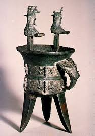 |
| Wikipedia | Jue (vase) — Wikipédia | 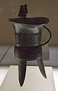 |
| springer.com | Mining and Metallurgical Technology | Springer Nature Link (formerly SpringerLink) | 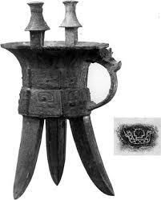 |
| Maxsold | Vintage Brass Wine Ceremonial Cup | Maxsold | 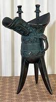 |
| Dorotheum | A small bronze jue - Asian art 2014/06/03 - Realized price: EUR 991 - Dorotheum | 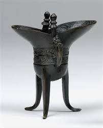 |
| Invaluable.com | Sold at Auction: A RARE AND IMPORTANT BRONZE RITUAL TRIPOD VESSEL, JIA, SHANG DYNASTY | |
| Scribd | Overview of the Han Dynasty | PDF | Han Dynasty | Asian Royal Families | |
| Etsy | Chinese Chou - Etsy | |
| Bridgeman Images | Image of CHINA: BRONZE VESSEL Bronze 'jia' wine vessel. Shang Dynasty, 2nd | |
| Bukowskis | An archaisitic bronze Jue vessel, Qing dynasty. - Bukowskis | |
| MutualArt | Shang Dynasty | China, Qing dynasty | MutualArt | |
| shine.cn | Glorious period of Southern Song Dynasty on show | Shanghai Daily | |
| eBay | OLD ANTIQUE CHINESE BRONZE WINE CUP JUE (K1592) | eBay | |
| Sotheby's | A bronze ritual wine vessel, jia, Early Shang dynasty | 商早期 青銅獸面紋斝 | Ritual and Reality II | 天人之際 II | Chinese Works of Art | Sotheby's | |
| LiveAuctioneers | A Pair Of Lobi Bronze Bells |